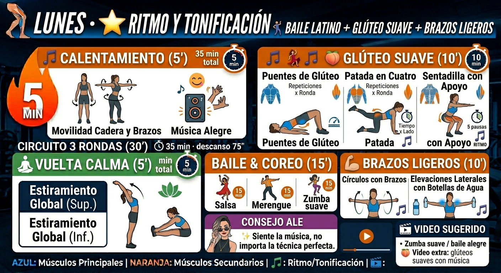
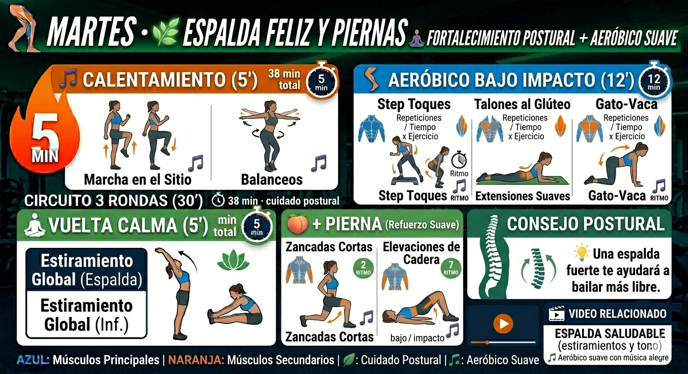
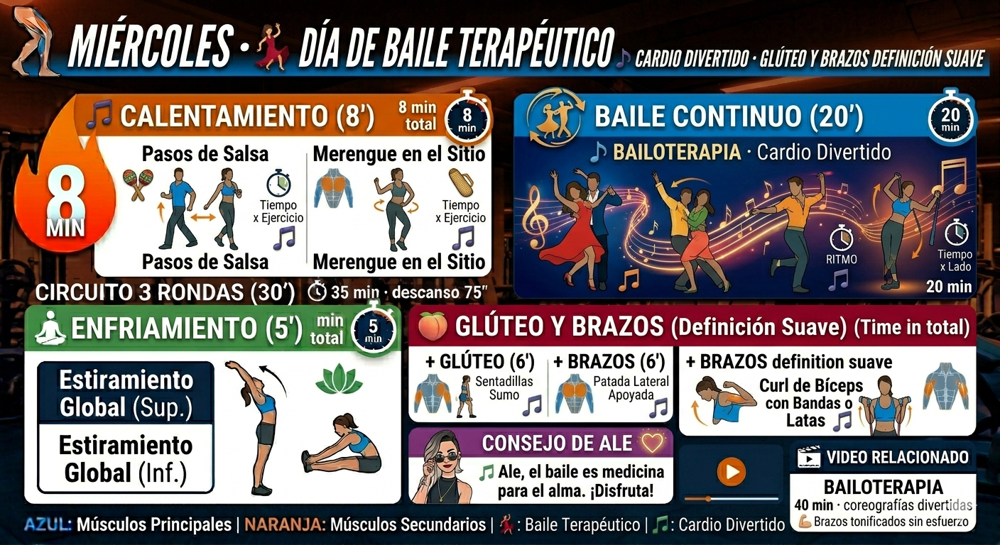
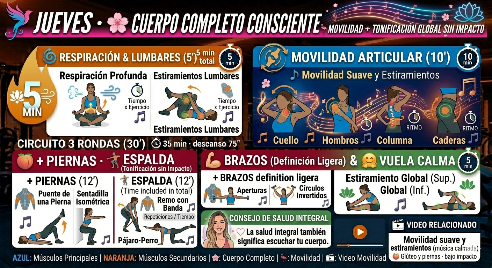
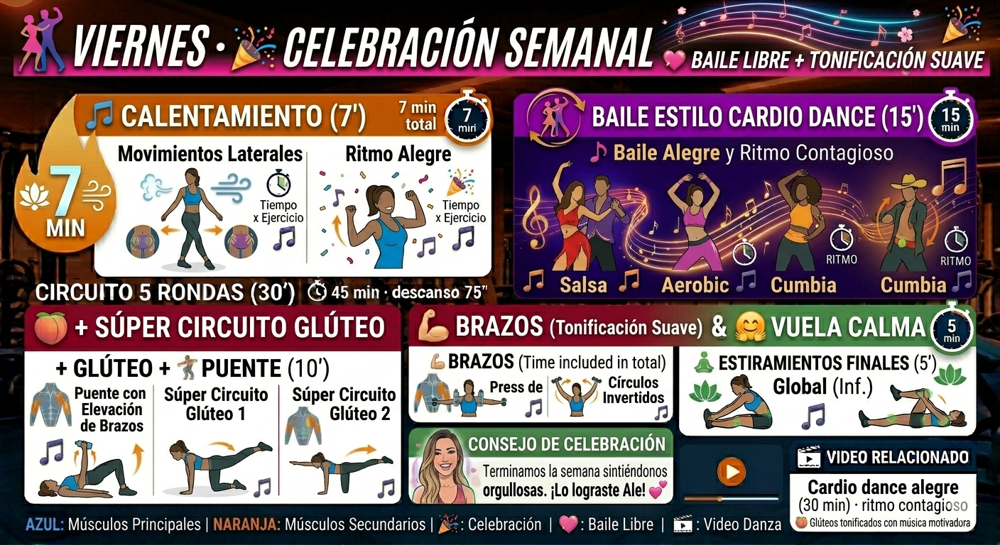

🌈 Cada día incluye su infografía y enlaces a videos con música alegre.





1.8 - 2.2 litros de agua al día. Infusiones, agua de frutas. Durante el baile, pequeños sorbos.
Vegetales, proteínas magras, grasas saludables. Sin dietas restrictivas, solo equilibrio.
Dormir 7-8h. Sábados: paseo o estiramientos. Domingo: baile familiar o descanso activo.
✨ Querida Ale: No necesitas hacer fuerza extrema. Con constancia y cariño, cada día fortaleces tu espalda, tonificas brazos y glúteos. El baile es tu superpoder. ¡Confía en tu proceso, preciosa! 💃✨